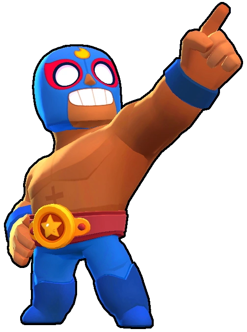
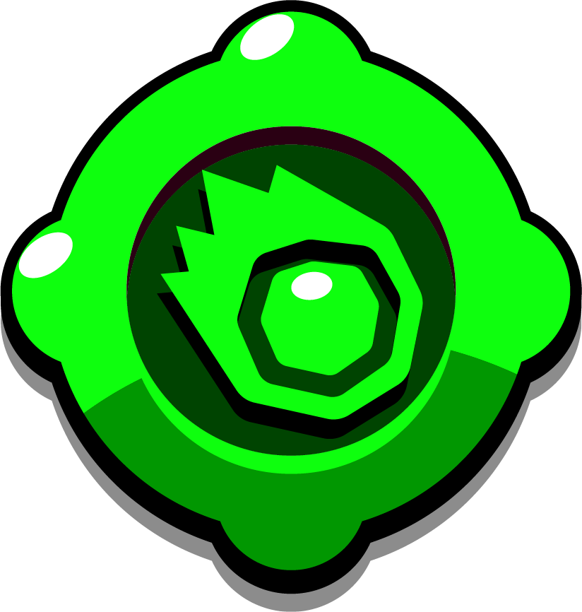

¿Quién es El Primo?
El Primo es el centro de todas las miradas ¡y es que es el rey del cuadrilátero! Es experto en meterse al público en el bolsillo, aunque no le resulta tan fácil con sus compañeros...
El Primo es un Brawler Especial que tiene la segunda vida más alta de todos los Brawler, una alta producción de daño y una gran movilidad con su Súper y su rápida velocidad de movimiento, pero un rango de ataque muy corto. El rasgo de El Primo le permite cargar su súper de los enemigos que lo dañan. Ataca con una ráfaga de puñetazos a corta distancia que infligen un gran daño total. Su súper es un salto que, al aterrizar, inflige daño, empuja a los enemigos hacia atrás y destruye la cobertura.
|  |
NIVEL DE FUERZA 11 |
Sus gadgets
 |
VUELTA DE TUERCA: El Primo agarra al enemigo más cercano y lo lanza por el aire como si fuera una tortilla. |
 | CINTURON DE ASTEROIDES: El Primo invoca un pequeño meteorito que aterriza sobre el enemigo más cercano. Este meteorito inflige 3040 puntos de daño y destruye los muros |
Sus habilidades estelares
 |
EL FUEGO: Cuando El Primo realiza su superataque, los enemigos que se encuentren dentro de su alcance arden durante 4 segundos y reciben 1784 puntos de daño." |
 |
DEPRISA Y CORRIENDO: Tras usar su súper, la velocidad de El Primo aumenta un 25% durante 4 segundos. |
Su hipercarga
SALTO GRAVITACIONAL: El Primo salta por los aires y al aterrizar da un codazo intergaláctico que atrae a los enemigos hacia el epicentro del impacto |
 Braian Arancibia
Braian Arancibia Aya El Baarar
Aya El Baarar